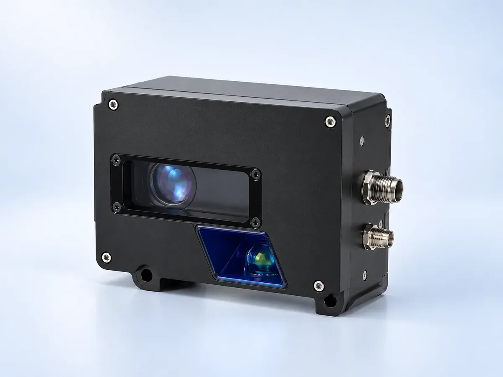
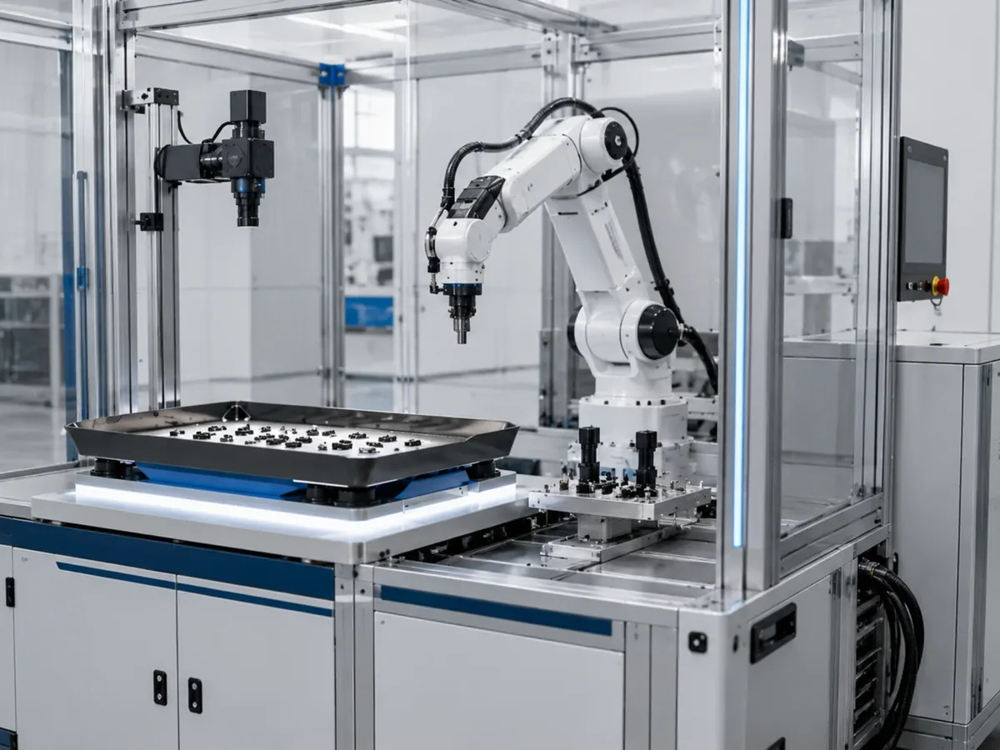
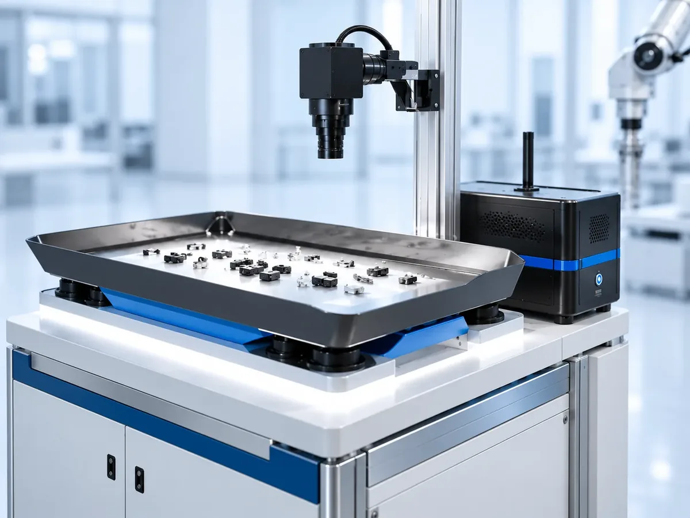

3D Vision Sensors for Industrial Inspection: Structured Light, Laser Profiling and Use Cases
Two-dimensional cameras see brightness. Many production questions, though, are about shape: Is this weld bead high enough? Is the battery tab flat? Where exactly is the part in the bin? Industrial 3D vision answers those questions by measuring distance as well as image intensity.
What 3D machine vision measures
A 3D sensor produces a set of points with X, Y and Z coordinates, often stored as a height map where each pixel holds a height instead of a grey value. From that data software extracts measurements: step heights, gaps and flush, flatness, volume, or the pose of an object for a robot.
The main benefit is robustness to colour and print. A black mark and a white mark at the same height look identical in 3D, so measurements do not drift with surface colour.

Main 3D technologies compared
Laser line triangulation (profile sensors)
A laser line is projected onto the part and a camera views it from an angle. The line's shape in the image encodes the profile. As the part moves under the sensor, profiles are stacked into a full 3D scan. This is the workhorse for conveyor inspection of welds, seals, adhesive beads and extrusions.
Structured light (snapshot sensors)
A projector casts a series of patterns over the whole scene and a camera captures how they deform. The result is a full 3D snapshot without moving the part. It suits stationary inspection, assembly checks and robot picking.
Stereo and time-of-flight
Stereo cameras compare two views, like human eyes, and work best on textured scenes. Time-of-flight cameras measure light travel time and are popular for logistics and volume estimation at lower precision.
| Technology | Motion needed | Typical strength | Watch out for |
|---|---|---|---|
| Laser line profiling | Yes, part or sensor moves | Fine profiles at line speed | Encoder sync, shadowing |
| Structured light | No | Full-field snapshot | Part must hold still during capture |
| Stereo | No | Large scenes, robots | Featureless surfaces |
| Time-of-flight | No | Volume, presence, logistics | Lower precision |
Typical industrial applications
- Height and coplanarity: connector pins, battery tab welds, component standoff.
- Bead and seal inspection: glue, sealant and weld bead width, height and continuity.
- Gap and flush: panel alignment in automotive and appliance assembly.
- Volume: food portions, packages and bulk material.
- Robot guidance: locating parts in depth for picking, alignment and assembly.
Deyi Vision groups structured-light 3D sensors and line-laser profile measurement under its 3D vision camera route for height, profile and surface geometry checks.
3D vision and robot pickup
Bin picking is the best-known 3D robot task, but it is also one of the hardest: parts overlap, reflect and hide each other. A simpler option is often to singulate parts first so they lie flat and apart, then locate them with 2D or light 3D vision.

That is the idea behind flexible feeders: a vibrating tray spreads loose parts, a camera above finds the ones in a pickable pose, and the robot picks them. Deyi Vision's flexible feeders and DTA workstations cover parts from 0.1 to 100 mm with F, FL and FS feeder series. Where the part can be presented flat, this route frequently avoids the cost and complexity of full bin picking.

Pitfalls when adopting 3D vision
Reflective and dark surfaces
Mirror-like metal reflects the projected light away, while very dark rubber absorbs it. Both create holes in the data. Test on real parts at the real angle.
Occlusion and shadowing
Because triangulation views the part from an angle, tall features can hide neighbouring areas. Dual-sensor layouts or a different orientation reduce shadowing.
Data volume and processing time
Point clouds are large. Check that the controller can process each scan within the cycle time, and keep only the region you need.
How to scope a 3D project
- State the measurement and tolerance, for example "bead height 1.0 mm ± 0.1 mm".
- Define the measuring area and whether the part moves.
- Collect samples that include worst-case surface finish.
- Decide on the output: pass/fail, numbers to a PLC, or poses to a robot.
Scoping in this order makes it clear whether 3D is needed at all, which is often the most valuable answer. Questions about any of these steps can go to Deyi Vision with a sample photo.
Frequently asked questions
Do I need 3D vision or will a 2D camera do?
If the defect or decision depends on height, flatness, volume or orientation in depth, 3D helps. If it depends on outline, colour or print on a predictable plane, 2D is cheaper and simpler.
Is structured light or laser profiling more accurate?
Both can be very accurate. Laser line profilers excel on moving parts on a conveyor; structured-light snapshot sensors suit stationary scenes and bin picking. Accuracy depends on the specific sensor and setup.
Why do shiny parts cause gaps in 3D data?
Specular surfaces reflect the projected pattern or laser away from the sensor, leaving missing points. Changing the angle, using a diffuse coating in testing or choosing a different sensor geometry can help.
What output does a 3D sensor give?
Usually a point cloud or a height map (range image), plus measured values such as heights, volumes or positions passed to a PLC or robot.
Contact
Considering 3D for a height, profile or pick-and-place task? Send a part photo, the tolerance and the cycle time and we can suggest a sensor route. Email sales@deyivision.com or visit the Deyi Vision contact page.